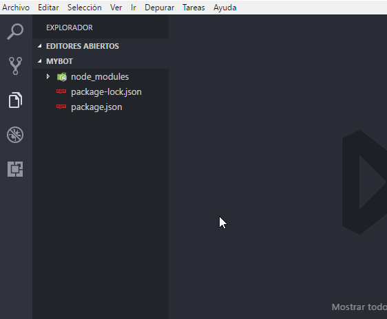

MyBot Guía
Instalación y uso de un editor de código
Creación de su cuenta App y de Bot
Instalación de Discord.js y Node.js
Introducción a un Bot de musica/audio
En marcha su primer bot
En este capítulo empezaremos a codificar y desarrollar su bot, con un ejemplo basico y útil:
NOTA: Se supone que usted ha seguido el capitulo de introducción, creación e instalación de su bot, antes de seguir con este capítulo. Tambien usted esta apunto de ver codigo .JS(Javascript), si no entiende o no tiene conocimiento de JavaScript ir a CodeAcademy y aprender lo basico de Javascript.
Comencemos:
- Abrir la carpeta del bot con Visual Studio Code o con el editor que tiene instalado.
- Crear un nuevo archivo y darle un nombre con la extencion .js (archivo JavaScript).
- Ejemplos: mybot.js, bot.js, app.js, etc. (Para el ejemplo utilizaré mybot.js).

Una vez creado el archivo, copiar y pegar el código de ejemplo para iniciar un bot:
const Discord = require("discord.js");
const client = new Discord.Client();
client.on("ready", () => {
console.log("Estoy listo!");
});
client.on("message", (message) => {
if (message.content.startsWith("ping")) {
message.channel.send("pong!");
}
});
client.login("TokenSecreto");
Ok, ahora reemplace la linea de la función "client.login('TokenSecreto')" por el token de su bot creado anteriormente.

Y guardar todo utilizando (CONTROL + S).
Variables Utilizadas
| Nombre | Descripcion |
|---|---|
| Discord | Definido para referenciar el paquete/modulo discord.js. |
| client | Representa la clase .Client(); es el eje principal para interactuar con Discord API, y el punto de partida para cualquier bot. |
NOTA: La variable "client" el algunos otros ejemplos o tutoriales los llaman "bot", pero tecnicamente se puede llamar de muchas formas. mayormente se le llama "client" para referenciar la funcion de .Client();
¡Listo!, una vez copiado el codigo y reemplazado el token es hora de activar el bot.
La manera de activar un bot es por consola CMD de windows o si estas utilizando Visual Studio Code puede utilizar el terminal(consola de comandos) integrando que vienen en el programa.
Activación por consola de comandos de windows:
- Abrir la consola e ingresar a la ruta de la carpeta del bot.
- Escriba el siguiente comando dentro de la consola: node mybot.js (mybot.js es el nombre del archivo .js).

Si todo ha ido bien sin ningún error su bot esta conectado en su servidor, en la lista de usuarios.
¡Genial! su bot esta listo para responder a todas sus órdenes, en el ejemplo copiado el bot respondera con un pong! a cualquier mensaje que empiece exactamente con ping, vamos a comprobar.

¡Éxito! tienes tu bot ejecutándose!, ahora podras crear un montón de funciones para tu bot. La activación de su primer bot se ha completado.
¿Que sigue?
Usted tiene un bot básico, funcional, es hora de comenzar a agregar nuevas características!. Siguiente paso
Si tiene alguna pregunta y/o duda después de leer esta guía, ingrese al servidor guía en Discord: MyBOT - Server guía.
Sitio web github/Crater